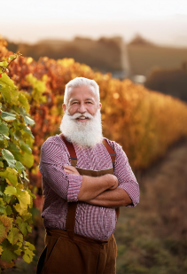
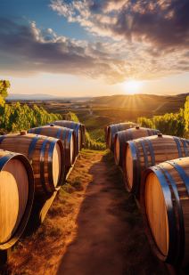

Colonne 1


FR
EN
DE
Illustration + logo
Colonne 4
Colonne 6
Colonne 7

Pinot noir, gamay
AOC Valais, vin naturel
Découvrez l’un des meilleurs vins rouges naturels sur le marché. Ce vin nature en biodynamie révèle des arômes de fruits rouges mûrs et d'épices subtiles. Il allie fraîcheur et complexité, idéal pour accompagner charcuteries et viandes grillées.
Colonne 9
Colonne 10

Notre vigneron
Rencontrez Jean-Marc Dupraz, un vigneron passionné du Valais, dédié à la biodynamie et à la vinification naturelle.

Notre philosophie
La nature fait partie entière de notre quotidien, de notre vie. Découvrez notre façon de voir la nature et nos vignobles.
Colonne 13
Colonne 14
Colonne 16